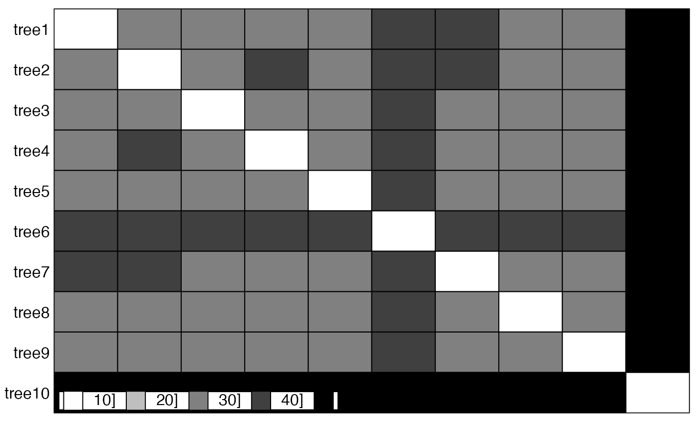

Compares phylogenetic trees using a choice of metrics / measures, and maps their pairwise distances into a small number of dimensions for easy visualisation and identification of clusters.
treespace( x, method = "treeVec", nf = NULL, lambda = 0, return.tree.vectors = FALSE, processors = 1, ... )
Arguments
| x | an object of the class multiPhylo |
|---|---|
| method | the method for summarising the tree as a vector. Choose from:
|
| nf | the number of principal components to retain |
| lambda | a number in [0,1] which specifies the extent to which topology (default, with lambda=0) or branch lengths (lambda=1) are emphasised in the Kendall Colijn metric. |
| return.tree.vectors | if using the Kendall Colijn metric, this option will return the tree vectors as part of the output. Note that this can use a lot of memory so defaults to |
| processors | value (default 1) to be passed to mcmapply specifying the number of cores to use. Must be 1 on Windows (see |
| ... | further arguments to be passed to |
Examples
## generate list of trees x <- rmtree(10, 20) names(x) <- paste("tree", 1:10, sep = "") ## use treespace res <- treespace(x, nf=3) table.paint(as.matrix(res$D))scatter(res$pco)#> Error in s.label(dfxy = res$pco$li, xax = 1, yax = 2, plot = FALSE, storeData = TRUE, pos = -3): non convenient selection for dfxy (can not be converted to dataframe)data(woodmiceTrees) woodmiceDists <- treespace(woodmiceTrees,nf=3) plot(woodmiceDists$pco$li[,1],woodmiceDists$pco$li[,2])woodmicedf <- woodmiceDists$pco$li if(require(ggplot2)){ woodmiceplot <- ggplot(woodmicedf, aes(x=A1, y=A2)) # create plot woodmiceplot + geom_density2d(colour="gray80") + # contour lines geom_point(size=6, shape=1, colour="gray50") + # grey edges geom_point(size=6, alpha=0.2, colour="navy") + # transparent blue points xlab("") + ylab("") + theme_bw(base_family="") # remove axis labels and grey background }#>